An open-source, pbrt-v4-compatible path tracer for the CPU, NVIDIA OptiX (Windows) and Apple Metal (macOS), with a Qt GUI, a Scene Builder and a Live Preview you can drag objects around in. Its renders are checked against closed-form results, not only against each other.
Reads pbrt-v4 scene files. Materials (diffuse, conductor, dielectric, coated, subsurface, hair, measured, mix and more), lights (area, point, spot, distant, goniometric, projection, image-based), media (homogeneous, cloud, grid, NanoVDB), cameras (pinhole, thin lens, orthographic, spherical, realistic) and instancing. Directive by directive support table.
Three renderers from one scene description. A multi-threaded CPU renderer with no GPU needed, an OptiX renderer for NVIDIA GPUs, and a Metal renderer for Apple silicon and Intel Macs. Alternative integrators: bidirectional path tracing, Metropolis light transport and photon mapping (SPPM).
A real GUI. A Scene Builder (add shapes, props, lights and materials, drag them around, save a .pbrt), a Live Preview where you click an object in the picture and move it, and video from camera paths.
Gallery
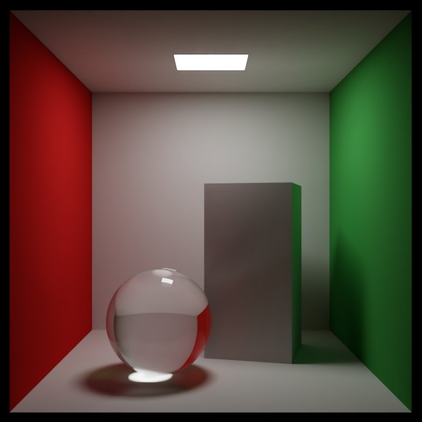
Cornell box glass sphere, aluminium box, caustic
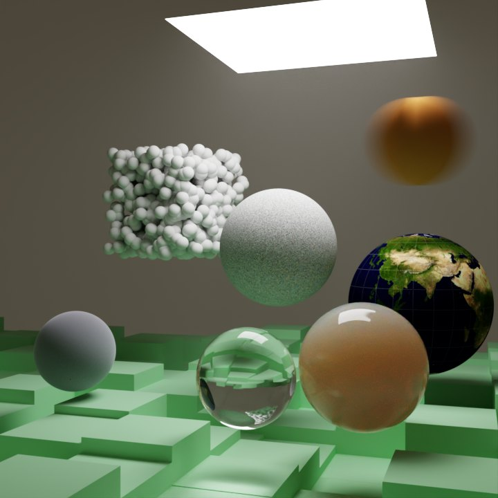
Final scene volumes, earth map, glass, noise
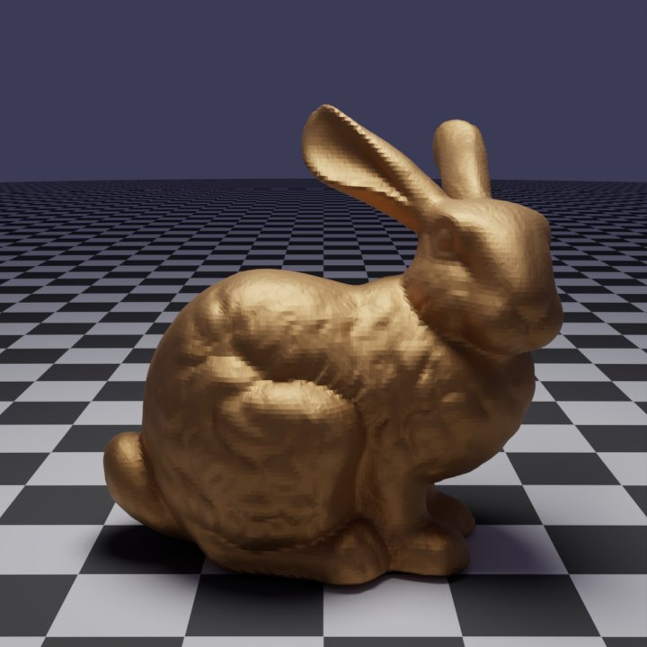
Stanford bunny 69k triangles, polished bronze
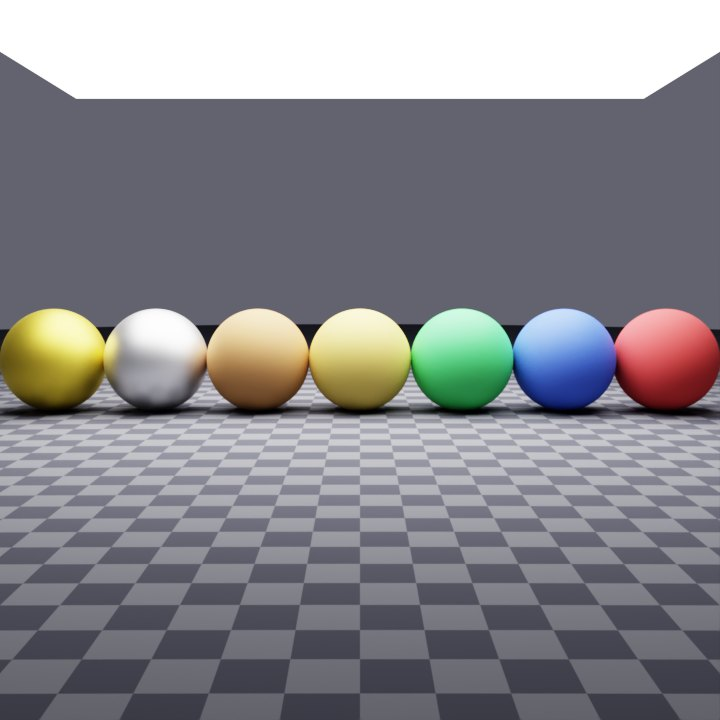
Principled BSDF matte plastic to clear-coated metal
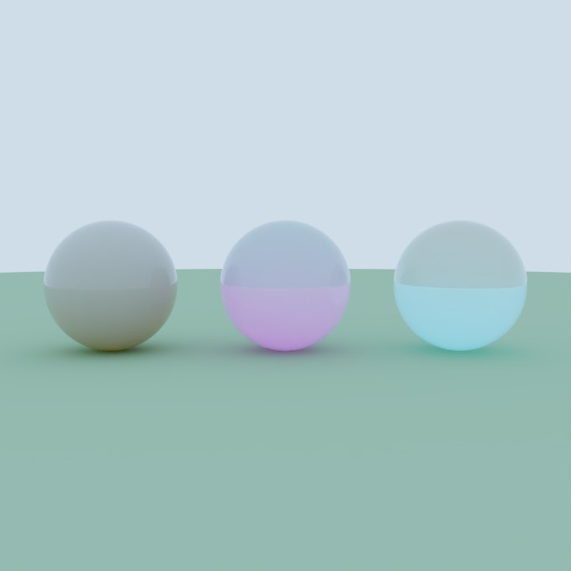
Glass with fog scattering media inside dielectrics
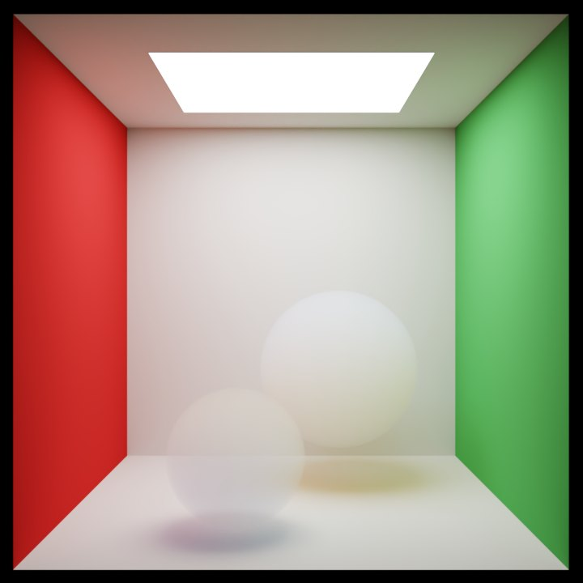
Cornell smoke participating media
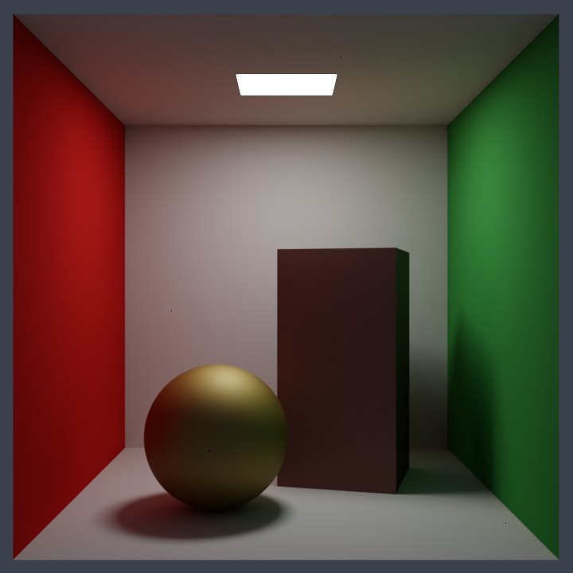
Coated conductor pbrt-v4 layered BxDF
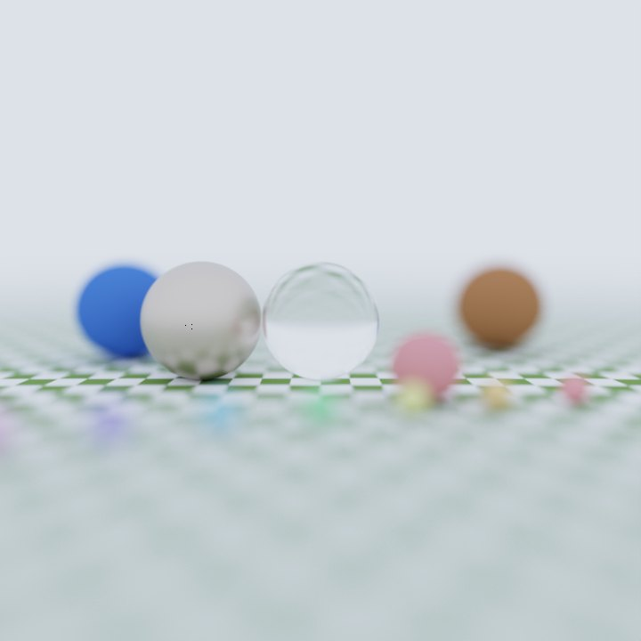
Depth of field thin-lens camera
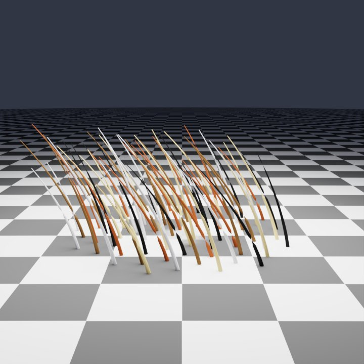
Curve fibres real Bezier strand geometry
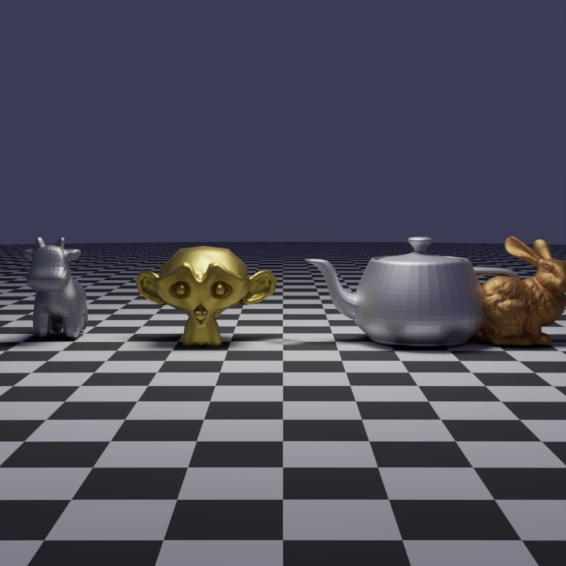
Trophy room four meshes, mixed materials
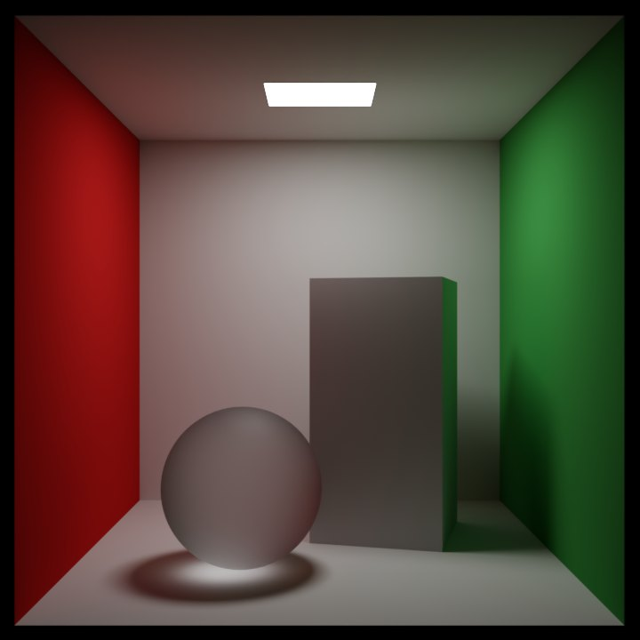
Rough glass GGX rough dielectric
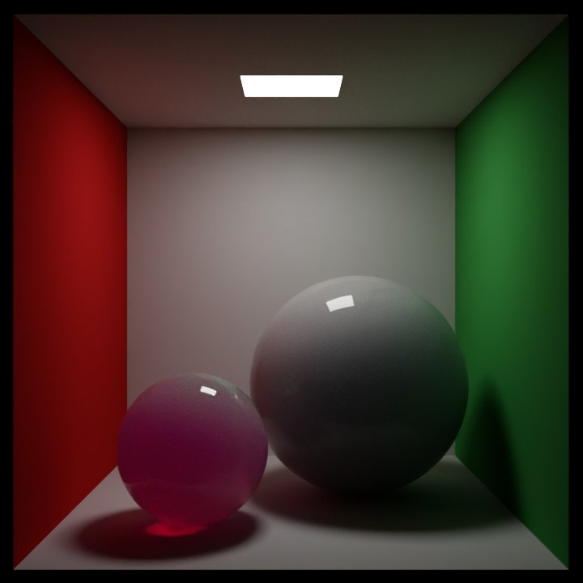
Wax and jade subsurface translucency
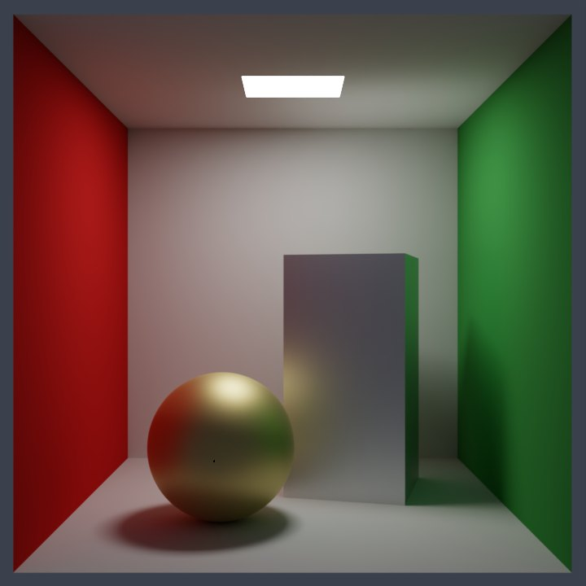
Cornell conductor polished gold and aluminium, GGX with complex Fresnel
Studio Showcase, made in the Scene Builder: a cyclorama lit by a three-light rig and a window-pattern projector, red car paint worn through to copper, mossy stone, candle wax, glass and gold (1280 x 720).
Rendered with this project at 720 x 720, 2048 samples per pixel, with the OptiX backend and the OptiX denoiser.
The Scene Builder
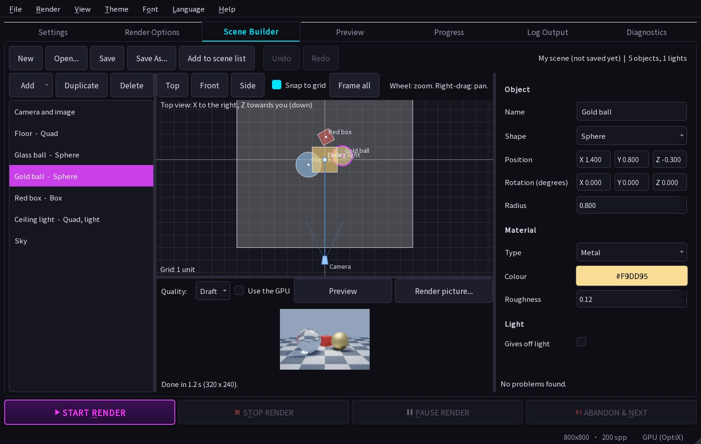
How the renders are checked
A rendering bug is quiet: the picture still looks plausible while being 20% too dark. So the tests check absolute numbers, and the renderer is made to disagree with itself:
Closed forms. A diffuse sphere under a white sky must read its albedo; a closed diffuse-transmission shell, Beer-Lambert absorbers and a point light over a plate have exact answers the renderers must hit.
Consistency sweep. The same scene written two ways (a constant sky against the same sky as a picture, the scene moved, scaled, mirrored, turned, a light written as a point or a sphere, a shape as a mesh or an instance, and so on) must give the same picture, for every material, on every backend. 500+ pairs; it found tilted cameras turned the wrong way, instanced shapes that vanished, and light that was missing under an image sky.
Real pbrt-v4 as the reference. 145 of the bundled scenes were rendered by an actual pbrt-v4 build and its mean picture value is kept in a table the tests read: the CPU and both OptiX renderers must stay within about 2% of it, with no pbrt installed. About 140 of the 145 read within 1.5% of pbrt.
Download the macOS app from the Releases page (a Windows package is built with scripts/package.ps1), or build the CPU renderer yourself (plain CMake and a C++17 compiler, no CUDA, OptiX or Qt needed):